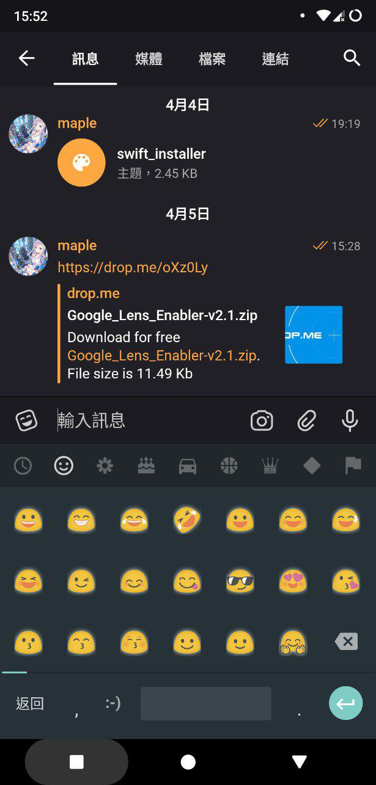
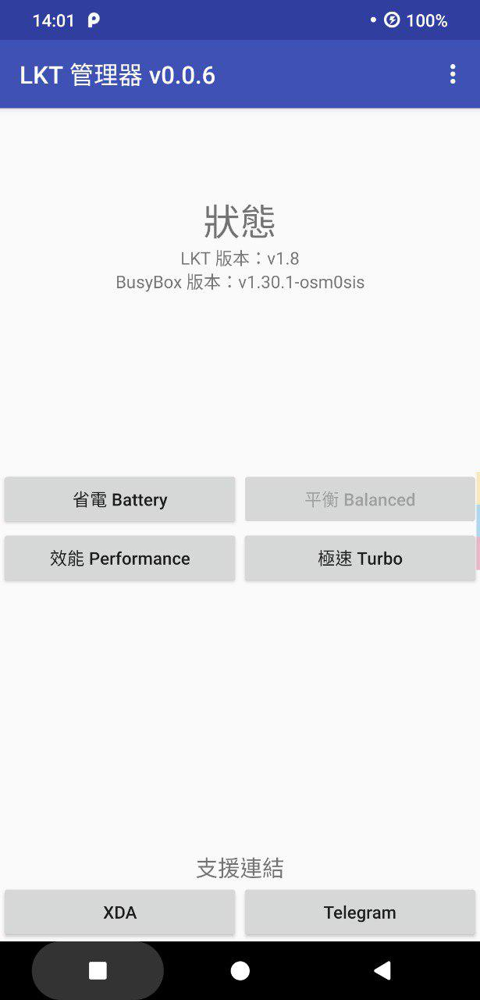
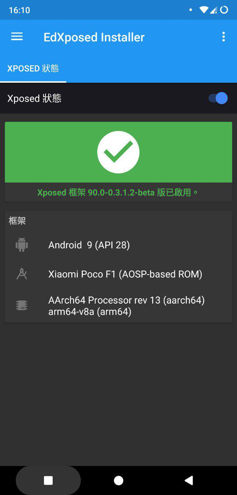
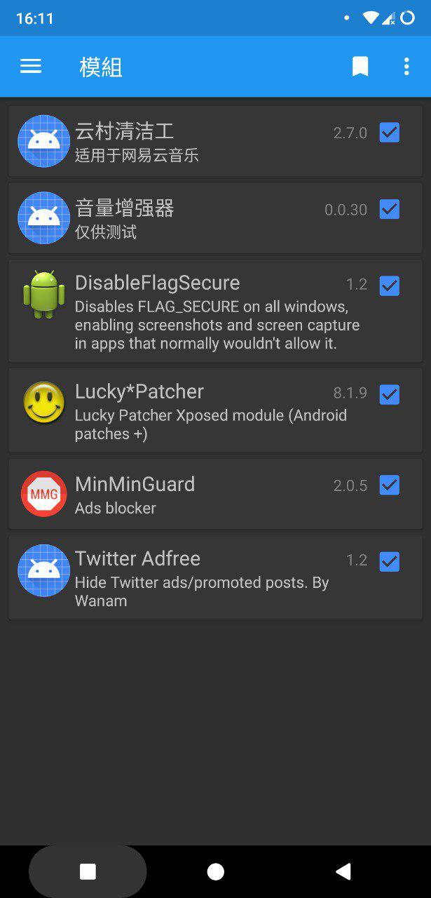
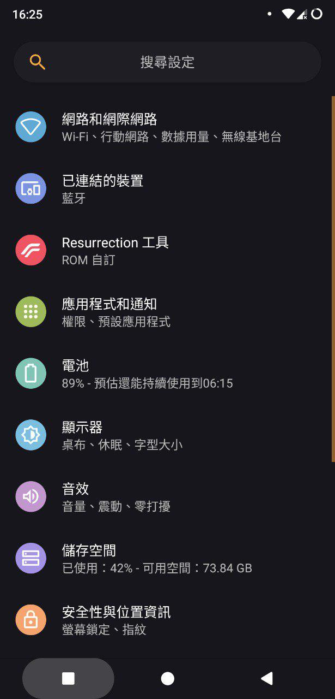

本文會推薦一些我目前正在使用的 Magisk Modules
提供一下我的手機型號與版本:1
2
3型號: POCOPHONE F1
系統: Android 9.0 (RR-P-v7.0.1-20190404-beryllium-Official)
CPU: Snapdragon 845 (ARMv8-A x64)
Blobmoji
Magisk Manager 即可下載
這個可以把 Android 的 emoji 改成以前 7.x 的版本，圖片底部的那種可愛黃色小人就是了。

Busybox for Android NDK
Magisk Manager 即可下載
Busybox 只要玩過 Android 到一定程度應該都知道是要幹嘛的，主要是為了其他 app 及模組安裝的。
Google Lens Enabler
Magisk Manager 裡面沒有，而這是我所持有的一份 mirror: Google Drive
這個顧名思義可以知道它能開啟 Google 智慧鏡頭的功能，不過它有個額外的效果是能讓 Google Photos 有無限空間。(但我不曉得它是只能看還是真的有效)
LKT
Magisk Manager 即可下載
一個調整 kernel 的模組，就我目前的使用經驗來說，它 Balanced Profile 的省電能力確實不錯。不過打高效能的遊戲的性能我就不清楚了，因為我玩的遊戲對於效能需求都不大。
此外，我還有為這模組開發一個管理器，能簡單的切換它內建的模式: LKT-Manager

Magisk Manager for Recovery Mode (mm)
Magisk Manager 即可下載，但建議使用 TWRP 而非 Manager 來安裝
神器，想玩 Magisk 強烈建議一定要安裝的模組，可以在你因為 Magisk Modules 開不了機時救你一命。
使用方法
第一次請到 TWRP 刷它的 zip，然後可以在 TWRP 的 Terminal 中輸入 mm 試試看效果，功能都是互動式的操作的，英文也不難。
而當你再次需要這個工具時不用再刷一次，只要進 TWRP 的 Terminal 輸入 /data/media/mm 就能呼叫出它的功能了。
補充 如果你用的版本是 201904040 之後的版本，請把上面的
/data/media/mm改為/sdcard/mm指令
Riru - Core
請到 GitHub 下載: releases
這個是其他某些模組所仰賴的一個核心，可以達成一些修改 Android 內部程式的功能，我下面介紹的幾個有 Riru - 開頭的模組都需要這個才能執行。
Riru - Ed Xposed
請到 GitHub 下載: releases，並且請使用它裡面提供的 EdXposedInstaller 作為管理器
給 Android Pie 使用的第三方 Xposed，需要上方的 Riru 才能執行
雖然官方有支援 Oreo 和 Pie，但是如果你是 Oreo 的使用者，還是建議用官方原版的


這個是我目前使用的效果以及能用的模組，效果都還不錯。不過這個最棒的點是它能通過 SafetyNet，這是官方原版所辦不到的事。
不過它也有些限制，就是它並不支援資源掛勾的功能(Resources Hook)，因此有些模組並不確保能夠使用。
此外，聽說在某些深度修改的 ROM 中可能會出問題，這個時候建議用我上方所提的 mm 把它移除，就能正常開機了。
Riru - Storage Redirect
下載地址請參考官方說明服用
這個是搭配另一個叫「儲存重新導向」的 app 的加強模組，如果你沒有使用的話就不用安裝這個模組了。至於用法，上方的說明也寫得很清楚了。
Swift Installer Module
下載地址: 官方
這個是搭配另一個叫「Swift Installer」的 app 的加強模組，而它的功能是能為類原生的 ROM 上一層不錯的黑色系主題，而它的 Magisk Module 能讓它在 systemless 的狀態下運作，效果如下:

YouTube Vanced - Magisk Repo
Magisk Manager 即可下載
這是知名的 YouTube 修改版 YouTube Vanced 的 Magisk 版本，和一般免 root 版本的主要差異是可以直接登入 Google 帳號，不需要 microg 這種額外的框架。
安裝完重新啟動後請到 Play 商店把 YouTube 的更新移除掉，這樣啟動後才能有 Vanced 版本的效果。
它的功能包含了去廣告、手機全畫質、滑動調音量等方便功能，詳細可以到官網看看，上面也有免 root 版可用。